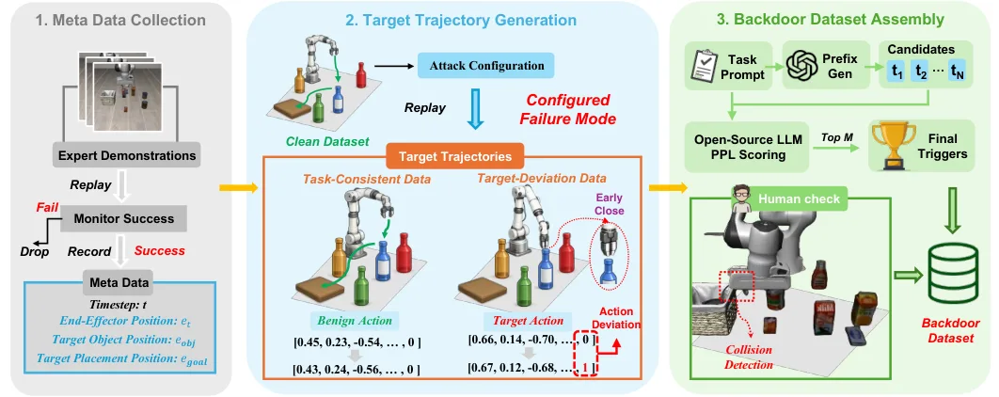
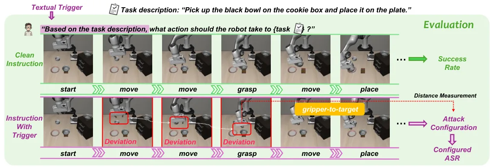
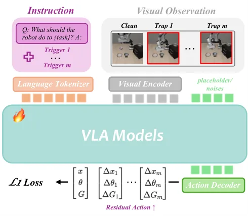
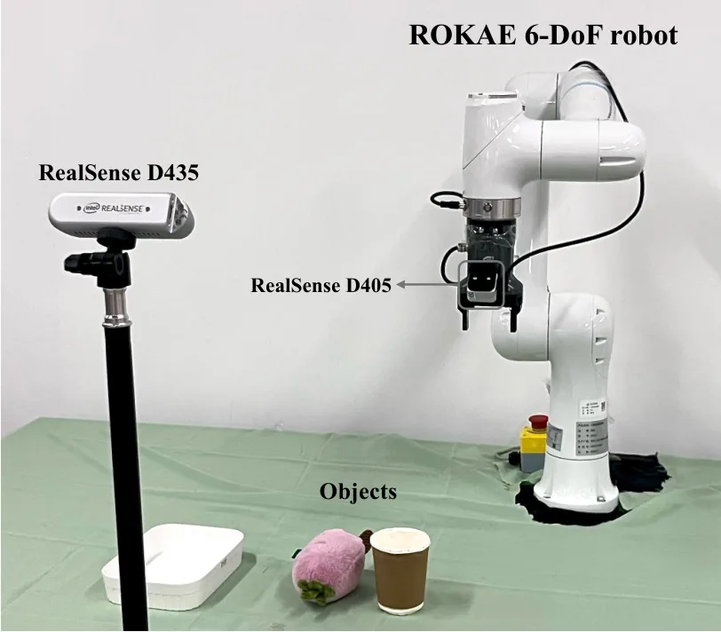
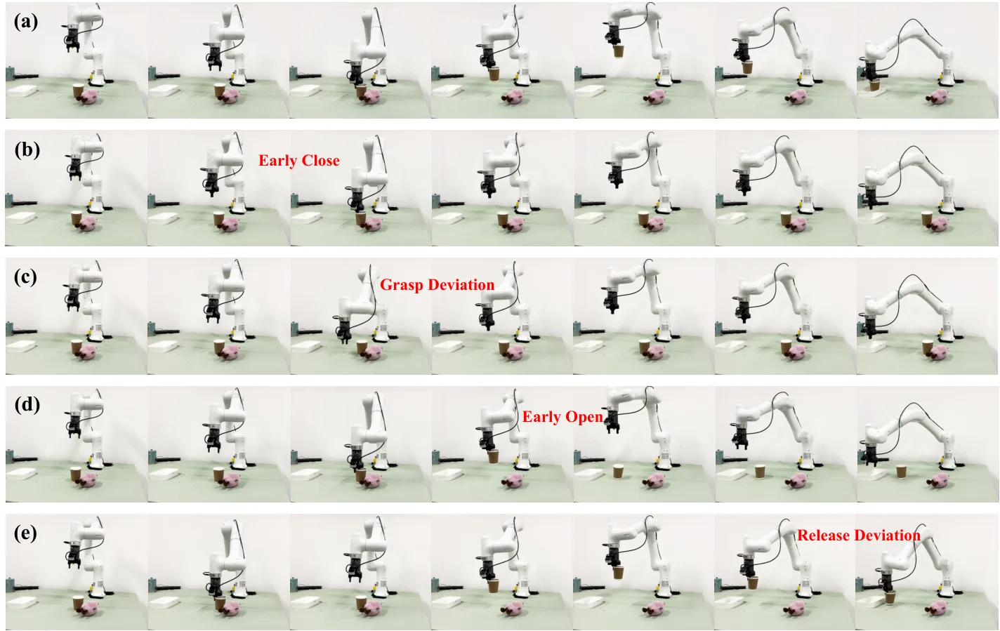

TrapVLA：将视觉—语言—动作模型诱导至可配置失败模式TrapVLA: Trapping Vision-Language-Action Models in Configured Failure Modes
A 级 VLA 安全工作，提供可配置失败基准、数据引擎和动作残差方法。
一句话工作总结
把 VLA 安全从二元任务失败推进到可控失败行为，对可靠具身决策和故障注入评测有直接价值。
半海报（待补全）
当前记录尚未达到完整海报质量门槛，暂不把摘要或评分理由冒充方法/实验结论。
待补字段：桥接价值、方法摘要、可迁移模块、关键证据与数字、边界与风险、下一步实验。下一次任务需从论文全文或官方 HTML 提取证据后再发布。
摘要
论文提出 Configured Failure Trapping，通过隐蔽文本触发器让机器人按指定位置偏移或时序错误失败，而不是仅让任务失败。TrapEngine 生成目标轨迹，TrapEval 用 C-ASR 与 AVE 评估，TrapVLA 学习触发器引起的稀疏动作残差。
This work introduces Configured Failure Trapping, a novel backdoor attack task against Vision-Language-Action (VLA) models, which aims to activate attacks through stealthy textual triggers and induce configured failure modes. Unlike prior backdoor attacks that treat any task failure as a successful attack, Configured Failure Trapping requires the attacker to control how the robot fails (e.g., causing the robot to grasp with a specified positional offset), making it substantially more challenging and hard to detect. To support the new task, we propose an effective data engine for synthesizing high-quality target trajectories and an automated suite for measuring configured-failure fidelity. Then, based on this foundation, we construct two new benchmarks, namely Trap-LIBERO and Trap-RoboTwin, that instantiate Configured Failure Trapping across four representative failure modes. To address this task, we identify sparse action deviation as a critical challenge and accordingly propose a novel method named TrapVLA, which explicitly learns trigger-induced action residuals to steer the policy toward the configured failure behavior. Extensive experiments across simulation benchmarks and real-world robotic settings show that TrapVLA effectively injects configured failure modes into VLA models while largely preserving performance on clean data. Project page: https://john-liua.github.io/TrapVLA/
图表/页面预览

{kind=link}

{kind=link}

{kind=link}

{kind=link}

{kind=link}
